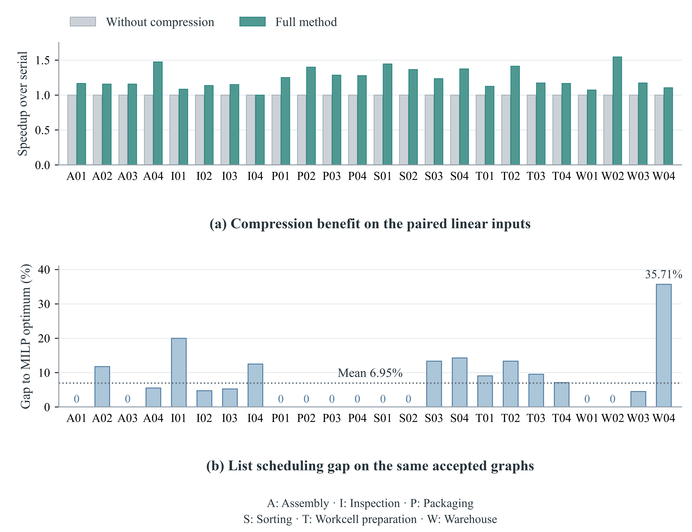
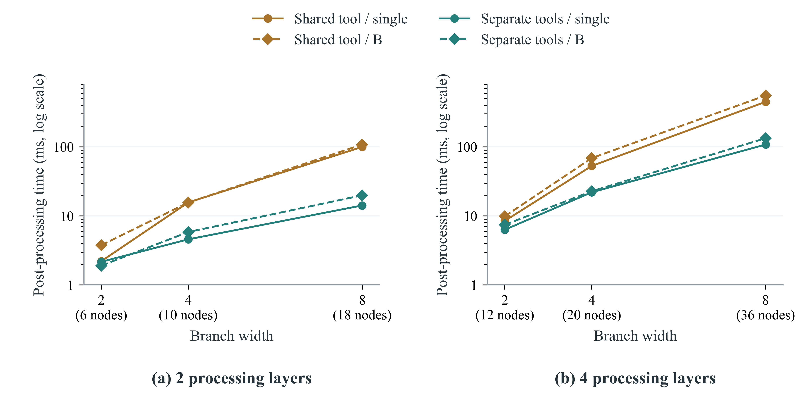
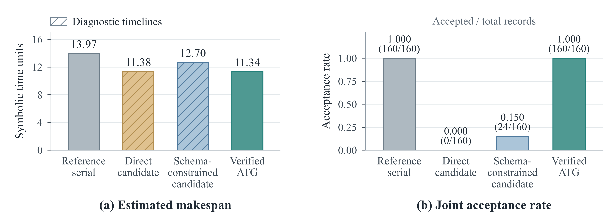

Evidence and manuscript index
Figure and table numbers below follow manuscript v7.87 and its supplement. Historical CSV filenames retain their original identifiers. Read the manuscript · Read the supplement.
Component ablation
Main Table 4 separates graph passes from strict plan passes. Removing state repair, synchronization repair or resource orientation yields 71/160, 76/160 and 118/160 accepted plans. Without unit assignment the graph passes 160/160 but no plan passes in this batch. Without compression, all 160 pass and mean accepted speedup falls from 1.2535× to 1.1629×. Means over different accepted subsets are not directly ranked.
Ablation data: strict and diagnostic columns · Historical diagnostic ablation (Supplement Table A4)
Field sensitivity
Main Table 5 and Supplement Table A2 distinguish missing relations from missing node facts. A declared relation can be repaired from existing fields, while formal acceptance can still pass when a required state or resource was never represented. These controlled perturbations do not measure natural-language task correctness.
Scheduling quality on fixed accepted graphs
On 24 shared graphs, mean symbolic makespan is 17.2500 for strict list scheduling and 16.1250 for MILP. List scheduling attains the same-graph optimum in 10/24 cases; its mean per-task gap is 6.95%. This comparison evaluates scheduling after acceptance, not globally optimal relation repair.
Per-task MILP comparison · MILP implementation

Measured runtime
Figure 7 and Supplement Table C5 report measured post-processing time by branching/resource configuration. These milliseconds are wall-clock measurements from the archived environment. Task makespans elsewhere use input durations or fixed simulation skill windows and must not be interpreted as these runtime measurements.
Per-configuration timing records · Small-graph size trends (Figure A1)


Controlled planning efficiency

Tables and source records
The PDFs give the reported definitions, denominators, aggregation and footnotes. Source files may include additional historical diagnostics; their filenames do not replace the current manuscript numbering.
| Table | Section | Content | Evidence |
|---|---|---|---|
| 1 | 4.2 | Atomic task graph quality | Source records / implementation |
| 2 | 4.3 | Dependencies, static parallel sets and acceptance | Source records / implementation |
| 3 | 4.3 | Planning efficiency and accepted schedules | Source records / implementation |
| 4 | 4.3 | Component ablation; graph and strict plan passes | Source records / implementation |
| 5(a–b) | 4.4 | Field sensitivity and reference agreement | Source records / implementation |
| 6 | 4.5 | 24 directly generated conversation candidates | Source records / implementation |
| 7 | 4.7 | List scheduling versus same-graph MILP | Source records / implementation |
| 8 | 4.8 | Same-input repair with shared compression | Source records / implementation |
| 9 | 4.8 | Archived tool candidates and external agreement | Source records / implementation |
| 10 | 4.9 | Public source specifications and acceptance | Source records / implementation |
| 11 | 4.9 | Resource orientation on six job-shop projections | Source records / implementation |
| 12 | 4.10 | Eight simulation templates and nominal windows | Source records / implementation |
| 13 | 4.10 | 96 same-input planning settings | Source records / implementation |
| 14 | 4.10 | Planning acceptance and physical completion | Source records / implementation |
| A1 | A.3 | Small-graph size and measured local runtime | Source records / implementation |
| A2 | A.3 | Detailed field-perturbation reference agreement | Source records / implementation |
| A3 | A.3 | Auxiliary audit and timeline metrics | Source records / implementation |
| A4 | A.3 | Nonstrict diagnostic ablation speedup | Source records / implementation |
| B1 | B | Failure diagnostics and distinct counting units | Source records / implementation |
| C1 | C.1 | Nine single-fault regression classes | Source records / implementation |
| C2 | C.2 | Acceptance contract and guarantee scope | Source records / implementation |
| C3 | C.3 | Component comparison on 24 shared inputs | Source records / implementation |
| C4(a–b) | C.4 | Controlled relation deletion and duration sensitivity | Source records / implementation |
| C5 | C.5 | Measured post-processing time by configuration | Source records / implementation |
Figures


Figures 1–4 share the manuscript EMF sources; PNG rendering differs between exports. Figures 5–11 and A1 retain the current submission-package PNG bytes. No figure was redrawn for this update.